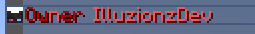
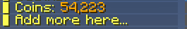

Configuration
This page has extensive information on how to configure the different aspects of the plugin. All default files in the plugin come with thorough comments to help get you started configuring. This page will break down the sections of the config for more in-depth of what they do and help. Some text may have annotations you can click on for more info, others may have comments that you can also read. To just view default files view here.
Main Config
The first file to look over is the main file config.yml. This just contains basic options
that apply throughout the plugin.
| config.yml | |
|---|---|
1 2 3 4 5 6 7 8 9 | |
-
This is the locale file to use for the plugin. It can be found in
locales. -
This is the default tab to display (taken from /tabs) when a player doesn't meet any of the requirements for any tab.
Custom Skins
This plugin has the ability to display custom skins in tab elements. They are
defined by a value and a signature. Custom skins can be defined in the skins.yml file
by name where you can reference them later in other configs. Custom skins can be found/created
at this website. They are defined in the config like so.
skinname: # (1)
value: <VALUE OF SKIN> # (2)
signature: <SIGNATURE OF SKIN> # (3)
-
The identifier of this skin. This is the name to be used when referencing it from other configs.
-
The value of this skin. Copied from the skin value section from https://mineskin.org/.
-
The signature of this skin. Copied from the skin signature section from https://mineskin.org/.
Example
discord:
value: eyJ0aW1lc3RhbXAiOjE0ODU4MjY5MDcxMDQsInByb2ZpbGVJZCI6IjQzYTgzNzNkNjQyOTQ1MTBhOWFhYjMwZjViM2NlYmIzIiwicHJvZmlsZU5hbWUiOiJTa3VsbENsaWVudFNraW42Iiwic2lnbmF0dXJlUmVxdWlyZWQiOnRydWUsInRleHR1cmVzIjp7IlNLSU4iOnsidXJsIjoiaHR0cDovL3RleHR1cmVzLm1pbmVjcmFmdC5uZXQvdGV4dHVyZS9kNmQ5ZjI1YTdhNGU2Yjc1Y2Y4ZWFhMWRhZWI0N2ZjOTQ4YzU3MTgyNDQxNTY3NTVjODVhNWU2OGI5OGMzZTUifX19
signature: v13zgC1XOdRm5icNeNrg19hcwmGnNFEIs3zKEJqPIJ9MACCFlk8lv9U6d32lPaAc1cPZLcbWpqWzVPyZRUT2qhQrG7+iq+T3Kl64mEaNCzRRVLMGZQj3sveHUd6UCXHQh2KUyoZ6T4zJj90y/0wJW8Mt8NZXxKawxdQEjgxPeqEM4bB3iwYqA5IPWPPvgtdhqy4ZOFITtAhx+0rZ6piwWwrRCs2G0WawfN0pdGaq/c4X5JxCDJftFTeo7+3rs41GXJilGnRE8xt1ANPieS2UNCp4ffu+/tt9yC6IkSQUSHs8NHXi/3bkRZ6LSQ4bQgupaiGrutiEhZO9JOBJGs53C045VrndQX3Hw9njCB4sb5cVkL1ZPYSpK6ou4quHvfaj9DKoG/A3JB9DMwlFGA4odFwu2iz+E/JQebd6OUtW/k++q7hwpt/dfOEm/OdEpsJy8qVTtiCNqEj145wyjnvyhuqi3sh5tr5GQfyx7fahhyjhtyPB+E3ME8AA0DcLNeDpA0CNoGF0DqSIwp52srGzATqgV8hK06QJIJCdsxzuMFSDiV1xtBdDSTrhBa88HCCKNmpxb4HqqiE6QY8SvqJyllKlYOTbfM1SdlcJ5Jk+76c80R1XOAjibeyYfhYsK2vJSysvoLOlHTbNLwHZpzmTDfHGIdl2oH+lokZP++JCGp8=
Player Groups
Custom player groups can be defined in order to provide a sorting system for players. They can be assigned with permissions and have options like the weight in the tab and how to display that player in-game. Players can have multiple groups but are prioritised by weight. They are defined with the format below.
groupname: # (1)
# Permission for player to have this group. Set to blank here so all players have it
permission: '' # (2)
# The priority of this group, the player will have the group they qualify for that
# has the highest weight. A higher weight is a higher priority
weight: 1 # (3)
display:
# How to display this group on the tab
tab: # (4)
animations: # (5)
- '&8Member &7%player_name%'
interval: -1 # (6)
-
This is the name of the group. This doesn't matter as isn't used anywhere else.
-
This is the permission required for the player to have this group. If it is left blank like so that means every player will have this group.
-
This is the weight of this group. If a player has multiple group their assigned group will be the one with the highest weight. If the number is higher that group will be prioritised. E.g, A weight of 99 has higher priorty than a weight of 56.
-
This is the Dynamic Text element to display in the tab for this group. As explained later this is passed through the variable
{group_format}.
Example
owner:
permission: tab.owner
weight: 99
display:
tab:
animations:
- '&4Owner &c%player_name%'
- '&cO&4wner &c%player_name%'
- '&4O&cw&4ner &c%player_name%'
- '&4Ow&cn&4er &c%player_name%'
- '&4Own&ce&4r &c%player_name%'
- '&4Owne&cr &c%player_name%'
interval: 10

Tab Columns
The Tab is comprised of Tab Columns. These are a set of elements that will display. They have the nice feature of pagination so you can have multiple pages of elements. Each column can also have a title element to show what each column displays. So simply a tab column is a list of elements with a title at the top. They are defined by the following format
# Id of this column for referencing it
name: "features"
# Page options
page:
# If enabled, the total number of elements go over
# the below 'elements' option, it will create a new
# page and display the remaining elements on all the
# new pages
enabled: true # (1)
# Maximum amount of pages to create. If
# items try to create more than this amount of
# pages it will stop at this page
max: 5 # (2)
# Maximum amount of elements per page. If the
# elements go over this they will flow to the next
# page
elements: 20 # (3)
# Interval in ticks between scrolling pages. Only applies
# if there is more than one page
interval: 100 # (4)
# This is the text element that is displayed at the bottom that indicated the
# current and maximum pages.
text: # (5)
# These are the different animation frames for
# this text. Each text element is iterated through
# to create a dynamic animation.
animations:
- "&7{current_page}&8/&7{max_page}"
# This is the interval (in ticks) between updating
# animation frames. This is limited by the tab update
# interval. Recommended being -1 if only
# has one frame as doesn't actually animate
interval: -1
# The title of this tab column
title: # (6)
# The custom skin for this tab element. There are multiple ways they're
# defined. You can set the 'name' element here which will take
# a skin from the skins.yml file. Otherwise you can directly specify the
# 'value' and 'signature' like in skins.yml but right here under 'skin:'
skin:
name: red
# These are the different animation frames for
# this text. Each text element is iterated through
# to create a dynamic animation. Colors are supported here
# along with 1.16+ HEX codes. Hex codes can be used with
# '𛈇'. Here is a good tool for generating gradient
# text. https://rgb.birdflop.com/
animations:
- "&c&lTab Column Title"
# This is the interval (in ticks) between updating
# animation frames. This is limited by the tab update
# interval. Recommended being -1 if only
# has one frame as doesn't actually animate
interval: -1
# This specifies if the text will be centered. This is good
# for aesthetics like the title where you want it to be center
center: true
# Text elements to display for this column
text: # (7)
# These are the different text elements in
# the column. The key doesn't matter and items are put
# in the order they are entered
1:
# These are the different animation frames for
# this text. Each text element is iterated through
# to create a dynamic animation. Colors are supported here
# along with 1.16+ HEX codes. Hex codes can be used with
# '𛈇'. Here is a good tool for generating gradient
# text. https://rgb.birdflop.com/
animations:
- 'First Element'
# This is the interval (in ticks) between updating
# animation frames. This is limited by the tab update
# interval. Recommended being -1 if only
# has one frame as doesn't actually animate
interval: -1
2:
animations:
- '&cSecond Element'
- '&4Second Element'
interval: 20
-
If this is set to true than if elements are more than the allowed elements extra pages will be created.
-
This is the maximum amount of pages to create.
-
This is the number of elements per page. It controls how long each column is, 20 is recommended
-
This is the interval (in ticks) between changing pages.
-
This is the tab item to display page information. It is displayed at the bottom of the column where there is more than 1 page.
-
This is the tab item to display at the top of the column if titles are enabled for the tab.
-
This is a list of tab items that will display on the tab column. Each is defined by an identifier. This doesn't matter as they are just added in the order they are defined.
Example
name: "features"
page:
enabled: true
max: 5
elements: 20
interval: 100
text:
animations:
- "&7{current_page}&8/&7{max_page}"
interval: -1
title:
skin:
name: red
animations:
- "&c&lFeatures"
interval: -1
center: true
text:
1:
animations:
- 'Tcfb&lGd61fb&lr౨fc&laǔbfc&ldba0fc&lifb4fc&leTc9fd&lnbdefd<&#adf3fd&ls'
interval: -1
'2':
animations:
- 'd76fb▌ ਒fbAc7afbnścfbic7ffcmᆁfcab83fctᔉfce b87fcyᣵfcoa8bfcu˘dfcr a90fdt⁤fde⌢fdx⏬fdt'
- '&#fb6a60▌ &#f46d6aA&#ed7075n&#e6737fi&#df768am&#d87994a&#d17c9ft&#ca7fa9e &#c281b4y&#bb84beo&#b487c9u&#ad8ad3r &#a68ddet	f90e8e⚥f3x⏬fdt'
interval: 20
'3':
requirement:
type: region
value: region1
animations:
- ' '
interval: -1
'4':
requirement:
type: region
value: spawn
animations:
- '&c&lConditional Text'
interval: -1
'5':
requirement:
type: region
value: spawn
animations:
- '&c▌ I only appear in spawn!'
interval: -1
'6':
animations:
- ' '
interval: -1
'7':
animations:
- '&b&lCustom Skins'
interval: -1
'8':
skin:
value: ewogICJ0aW1lc3RhbXAiIDogMTYzODMzMTE3NDI2NCwKICAicHJvZmlsZUlkIiA6ICI2MzMyMDgwZTY3YTI0Y2MxYjE3ZGJhNzZmM2MwMGYxZCIsCiAgInByb2ZpbGVOYW1lIiA6ICJUZWFtSHlkcmEiLAogICJzaWduYXR1cmVSZXF1aXJlZCIgOiB0cnVlLAogICJ0ZXh0dXJlcyIgOiB7CiAgICAiU0tJTiIgOiB7CiAgICAgICJ1cmwiIDogImh0dHA6Ly90ZXh0dXJlcy5taW5lY3JhZnQubmV0L3RleHR1cmUvNzk2ODJjOTM1MmQyMGM4NWUwZWRkOWMwZWExMGY3NDQwZjE3NGI2YjAxMzMyODY5NWZmZTBmOGNiZmY0ZmM4MCIKICAgIH0KICB9Cn0=
signature: Wkc6UVNtcmB7dCUcUnbefPJ9+SrFSzJSdCp/c3XxhIA703MImbvF7Iy0p/nEQ0dWNzkzfvu7GcRI/zU61TjLYxzP2VrTbtHnxlsV5Rer/tcUk4M5KZGUxW+SL1K/HMl/1PLZ5KMBKQ9TO0kSPiYvAczVjYHACkYcgE34YJadmqGDrSObdthysVao/od1/BpDtqUHrpj89g5/R+kocAhI6YumImVNBI/vFabnXoindH8kCr/jlrRaRgJn2r1+woWMlT3gJvdrT+bpJwf789/pAOqpHwvzPxnrI+1jQkODpWJF4mpE7NvVYKNb7UyHYChQUlP1CNV1GqKaXaKrQqDWQ2LuhKxsQ/QK5VHbKCWXsrdqOI8KDXpztCgbJCasHsK2SblIIvXwgImvNIJEu7fFxUm1VuEbljFwKv6LXm7jm0Hmj9/4x8QviGUSCu3CAHvKdXf0OAtVrP9QO/x20mFxkeivy4J14OvMj40BTC/BqLTq4SbzLNMAjXwqJqeNywNyzCvmq2BtT+93rHb5XhmbmF/yGbYHQrnumsqU5ON9mdZ88aJy+XfNMZ9UfS0quNzW4eLWvr4NJVEMcVNkNYUsRmG+sAbl71ScJRZfG41HlSSbOXY3YzNBfoWBTLArLfq+r9rsHw0Cnpv8XfVYVTbbmeHTCOdoKOZrLMH1h8C/vZM=
animations:
- '&b▌ Display custom skins'
interval: -1
'9':
animations:
- ' '
interval: -1
'10':
animations:
- '&a&lPing'
interval: -1
'11':
ping: ONE
animations:
- '&a▌ Set the ping of'
interval: -1
'12':
ping: TWO
animations:
- '&a▌ elements like so'
interval: -1
'19':
animations:
- ' '
interval: -1
'13':
animations:
- '&d&lInfo'
interval: -1
'14':
animations:
- '&d▌ Feel free to browse the'
interval: -1
'15':
animations:
- '&d▌ wiki to find out how'
interval: -1
'16':
animations:
- '&d▌ powerful the plugin'
- '&d▌ &5p&dowerful the plugin'
- '&d▌ p&5o&dwerful the plugin'
- '&d▌ po&5w&derful the plugin'
- '&d▌ pow&5e&drful the plugin'
- '&d▌ powe&5r&dful the plugin'
- '&d▌ power&5f&dul the plugin'
- '&d▌ powerf&5u&dl the plugin'
- '&d▌ powerfu&5l &dthe plugin'
interval: 5
'17':
animations:
- '&d▌ really is!'
interval: -1

Tab Lists
Tab Lists are another type of Tab Column excpet instead of speicfy elements it's a list of elements and you specify how each element is represented. It has the same pagniation features for multiple pages and the ability to specify a title to display at the top. They are defined the same as tab columns except with some extra options and the text is done differently.
Online Player Tab Lists can have a requirement option which will filter players in that list.
You can set an Online Player Tab List for multiple columns and the players will span across those columns. Make sure
to set the page.enabled option for the list to false to avoid it trying to change page.
# Id of this column for referencing it
name: "online_list"
# Page options
page:
# If enabled, the total number of elements go over
# the below 'elements' option, it will create a new
# page and display the remaining elements on all the
# new pages
# If using an online_list across multiple columns, this option
# should be set to false so it doesn't try to change pages
enabled: true
# Maximum amount of pages to create. If
# items try to create more than this amount of
# pages it will stop at this page
max: 5
# Maximum amount of elements per page. If the
# elements go over this they will flow to the next
# page
elements: 20
# Interval in ticks between scrolling pages. Only applies
# if there is more than one page
interval: 100
# This is the text element that is displayed at the bottom that indicated the
# current and maximum pages.
text:
# These are the different animation frames for
# this text. Each text element is iterated through
# to create a dynamic animation.
animations:
- "&7{current_page}&8/&7{max_page}"
# This is the interval (in ticks) between updating
# animation frames. This is limited by the tab update
# interval. Recommended being -1 if only
# has one frame as doesn't actually animate
interval: -1
# The title of this tab column
title:
# The custom skin for this tab element. There are multiple ways they're
# defined. You can set the 'name' element here which will take
# a skin from the skins.yml file. Otherwise you can directly specify the
# 'value' and 'signature' like in skins.yml but right here under 'skin:'
skin:
name: green
# These are the different animation frames for
# this text. Each text element is iterated through
# to create a dynamic animation. Colors are supported here
# along with 1.16+ HEX codes. Hex codes can be used with
# '𛈇'. Here is a good tool for generating gradient
# text. https://rgb.birdflop.com/
animations:
- "&a&lOnline &2%server_online%"
# This is the interval (in ticks) between updating
# animation frames. This is limited by the tab update
# interval. Recommended being -1 if only
# has one frame as doesn't actually animate
interval: 5
# This specifies if the text will be centered. This is good
# for aesthetics like the title where you want it to be center
center: true
# What the list consists of. Here put
# the element. Can put custom ones from addons
# Types: online_players
type: online_players # (1)
# In what order to display elements
# Put a custom sorter
# Sorters: distance, number_variable, weight
#
# distance: The closest players to you are near the top
# number_variable: A higher number appears higher
# Taken from 'sort-variable'
# weight: Uses weight taken from the player group
# See 'groups.yml'. Higher weight appears at the top
sorter: weight # (2)
# This will be used for number_variable
# to sort by number. Can use placeholders
# so the value of the placeholder is used
sort-variable: "" # (3)
# Will only allow players with tab.online permission
# to show in list
requirement:
type: permission
value: tab.online
# Text for each element in the list
text: # (4)
# These are the different animation frames for
# this text. Each text element is iterated through
# to create a dynamic animation. Colors are supported here
# along with 1.16+ HEX codes. Hex codes can be used with
# '𛈇'. Here is a good tool for generating gradient
# text. https://rgb.birdflop.com/
animations:
- '{group_format}'
# This is the interval (in ticks) between updating
# animation frames. This is limited by the tab update
# interval. Recommended being -1 if only
# has one frame as doesn't actually animate
interval: 20
-
This is the type of this list. Currently the only type is
online_playerswhich is a list of online players. -
This is the sorter for the list. The function is defined in the comments.
-
This is the sort variable if
number_variableis chosen. Use a placeholder from PlaceholderAPI and the highest numbers will appear at the top. -
This is a dynamic text element to display for each object in the list. Use placeholders to make it unique for each object. Use the placeholder
{group_format}to take the tab display from the player's group.
Tabs
Tabs are the actual elements that are displayed to the user. For these you specify the columns to display for this tab along with the headers and footers of the tab. You can have multiple tabs that change out depending on what situation the player is in. They are defined with the following format.
# ID of this tab for referencing it
name: "default"
# Requirement needed to view this tab
requirement: # (1)
type: permission
value: ""
# The weight of this tab. This controls the
# priority this tab is displayed if the player
# meets overlapping requirements.
# Higher number means higher priority
weight: 1 # (2)
# Options for columns displayed in this tab
columns:
# Whether to display titles at the top of each column.
# Adds the title then a blank spot then begins column text
display-titles: true # (3)
# The minimum width of each element in the tab.
# If there are no elements the columns will be at least this width.
# If elements are over this text length they will be trimmed
width: 30 # (4)
# The columns to display in this tab mapped to
# their slot. The tab will be as wide as there are many columns.
# MAXIMUM of 4 columns on one tab
list: # (5)
# The number is which slot to display the column in
# and the value is the name of the column
# These here would make the tab 4 columns wide
1: "online_list"
2: "player_info"
3: "server_info"
4: "features"
# The tab header. This is displayed at the top
# of the tab above all columns
header: # (6)
# Text to display in the header
text:
# These are the different text elements in
# the column. The key doesn't matter and items are put
# in the order they are entered
1:
# These are the different animation frames for
# this text. Each text element is iterated through
# to create a dynamic animation. Colors are supported here
# along with 1.16+ HEX codes. Hex codes can be used with
# '𛈇'. Here is a good tool for generating gradient
# text. https://rgb.birdflop.com/
animations:
- " "
# This is the interval (in ticks) between updating
# animation frames. This is limited by the tab update
# interval. Recommended being -1 if only
# has one frame as doesn't actually animate
interval: -1
2:
animations:
- "&b&lMinecraft Server"
- "&b&lM&9&li&b&lnecraft Server"
- "&b&lMi&9&ln&b&lecraft Server"
- "&b&lMin&9&le&b&lcraft Server"
- "&b&lMine&9&lc&b&lraft Server"
- "&b&lMinec&9&lr&b&laft Server"
- "&b&lMinecr&9&la&b&lft Server"
- "&b&lMinecra&9&lf&b< Server"
- "&b&lMinecraf&9< &b&lServer"
- "&b&lMinecraft &9&lS&b&lerver"
- "&b&lMinecraft S&9&le&b&lrver"
- "&b&lMinecraft Se&9&lr&b&lver"
- "&b&lMinecraft Ser&9&lv&b&ler"
- "&b&lMinecraft Serv&9&le&b&lr"
- "&b&lMinecraft Serve&9&lr"
interval: 5
3:
animations:
- '&7&o(( With a new tab experience ))'
interval: -1
4:
animations:
- " "
interval: -1
# The tab footer. This is displayed at the bottom
# of the tab below all columns
footer: # (7)
# Text to display in the footer
text:
0:
animations:
- " "
interval: -1
2:
animations:
- '&c&lSTOREWIDE SALE 25% OFF'
- '&4&lSTOREWIDE SALE 25% OFF'
interval: 20
3:
animations:
- "&c/buy &for visit &cbuy.server.com"
interval: -1
99:
animations:
- " "
interval: -1
-
This is the requirement for this tab to display to the player.
-
This is the weight of this tab. If a player meets the requirements for multiple tabs, they will have the one with the highest weight. If the number is higher that tab will be prioritised. E.g, A weight of 99 has higher priorty than a weight of 56.
-
This is if each tab column will display a title at the top defined in their
titleproperty. -
This is the maximum width for each element on the tab. Anything above will be trimmed.
-
This is a list of columns to display on the tab. Each is defined like so where the slot it is in is mapped to the id,
slot:column_id. -
This is a list of dynamic text elements that display in the header of the tab.
-
This is a list of dynamic text elements that display in the footer of the tab.
Components
Alot of configuration options take the format of certain components. This will explain the format for each component so you can refer to here when it mentions it uses that component.
Dynamic Text
Dynamic text is a text element that animated. It contains several frames along with the interval between changing frames. The format is as follows.
# These are the different animation frames for
# this text. Each text element is iterated through
# to create a dynamic animation. Colors are supported here
# along with 1.16+ HEX codes. Hex codes can be used with
# '𛈇'. Here is a good tool for generating gradient
# text. https://rgb.birdflop.com/
animations: # (1)
- 'First Frame'
- 'Second Frame'
# This is the interval (in ticks) between updating
# animation frames. This is limited by the tab update
# interval. Recommended being -1 if only
# has one frame as doesn't actually animate
interval: 20 # (2)
-
This a list of string elements that are the frames.
-
This is the time in ticks before each frame will change to the next. This is recommended to be set at -1 if there is only 1 frame so the plugin doesn't bother updating it.
Example
animations:
- 'd76fb▌ ਒fbAc7afbnścfbic7ffcmᆁfcab83fctᔉfce b87fcyᣵfcoa8bfcu˘dfcr a90fdt⁤fde⌢fdx⏬fdt'
- '&#fb6a60▌ &#f46d6aA&#ed7075n&#e6737fi&#df768am&#d87994a&#d17c9ft&#ca7fa9e &#c281b4y&#bb84beo&#b487c9u&#ad8ad3r &#a68ddet	f90e8e⚥f3x⏬fdt'
interval: 20

Tab Item
A tab item is an element that displays in each of the columns. It contains a Dynamic Text element along with options for custom skins and centered text. The format is as follows.
item:
ping: FIVE # (1)
center: false # (2)
skin: # (3)
name: <SKIN NAME>
value: <SKIN VALUE>
signature: <SKIN SIGNATURE>
requirement: # (4)
type: string equals
value: '%player_name%'
input: IlluzionzDev
animations: # (5)
- 'First Frame'
- 'Second Frame'
interval: 20
-
This is the ping to display for this element. The options are
ONE, TWO, THREE, FOUR, FIVEfor the different ping bars in the tablist. -
This is if the text should be a centered element in the tab.
-
This is the custom skin for this element. The
nameparameter tries to find a custom skin defined inskins.yml. If you want to implement a specfic skin just for this element you can directly specify thevalueandsignaturehere. -
This is the requirement for this tab element to display. If conditions aren't met it won't be displayed.
-
This is the dynamic text element of the tab item.
Example
'4':
animations:
- '&e▌ Coins: &6%vault_eco_balance_commas%'
interval: -1
'5':
animations:
- '&e▌ Add more here...'
- '&e▌ Add more here&6&l.&e..'
- '&e▌ Add more here.&6&l.&e.'
- '&e▌ Add more here..&6&l.'
interval: 10

Requirement
Some items in the tab will have requirements to display. These are custom checks that have alot of power to display tabs and elements in certain scenarios for a more dynamic tab. They are defined with the following format below and then each type will be expained.
requirement:
type: <REQUIREMENT TYPE> # (1)
value: <FIRST INPUT> # (2)
input: <SECOND INPUT> # (3)
-
This is where you specify the type of requirement check.
-
This is the first input value. This is at least needed for every type.
-
This is the secondary input value. Only some types need it and it is for more comparision checks like numbers or strings.
Permission
This checks if the player has the given permission.
requirement:
type: permission
value: <permission to check>
Region
This checks if the player is in a given WorldGuard region.
requirement:
type: region
value: <region to check>
Experience
This checks if the player has at least a certain amount of experience points.
requirement:
type: exp
value: <experience points>
Near
This checks if the player is within range of certain coordinates.
The format for location is worldname,x,y,z
requirement:
type: near
value: <location>
input: <distance>
String Equals
This checks if a certain string is exactly equal to another. Pass in values through PlaceholderAPI.
requirement:
type: string equals
value: <input string>
input: <string to compare to>
String Equals Ignorecase
This checks if a certain string is equal to another ignoring case. Pass in values through PlaceholderAPI.
requirement:
type: string equals ignorecase
value: <input string>
input: <string to compare to>
String Contains
This checks if a certain string contains another string. Pass in values through PlaceholderAPI.
requirement:
type: string contains
value: <input string>
input: <string to see if contains>
Regex
This checks if a regular expression matches the given text.
requirement:
type: regex
value: <the string to match with>
input: <the regex expression>
Comparison Operators
This checks how certain numbers compare to each other. Avaiable operations are ==, >=, <=, !=, >, <.
Pass in values through PlaceholderAPI.
requirement:
type: ==, >=, <=, !=, >, <
value: <first number to check>
input: <second number to check>